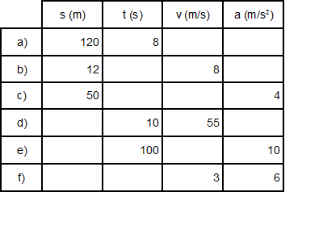

|
Aufgaben |
1) Die folgende
Tabelle beschreibt sechs gleichmäßig beschleunigte
Bewegungen,
die aus dem Stand heraus
erfolgen.
Berechne die fehlenden
Werte. |
|
|  |
|
2) Drei Sekunden nach dem Start erreicht ein Rennwagen die
Geschwindigkeit 80 km/h.
a) Berechne
die durchschnittliche Beschleunigung.
b) Wie groß müsste die Beschleunigung sein, wenn derselbe
Rennwagen nach der Hälfte
der Zeit die halbe Geschwindigkeit erreicht haben soll? |
 |
3) Die Kugel eines Gewehrs soll im Lauf gleichmäßig
beschleunigt werden.
a) Welche
Beschleunigung erfährt die Kugel, wenn sie einen 80 cm
langen Lauf
mit einer Geschwindigkeit von 760 m/s verlässt?
b) Nach welcher Zeit verlässt die Kugel den Lauf? |
|
4) Ein Pkw erhöht während einer Zeit von 8 Sekunden seine
Geschwindigkeit gleichmäßig
von 60
km/h auf das Doppelte.
a) Wie groß ist
dabei seine Beschleunigung?
b) Welcher
Weg wird dabei zurückgelegt?
|
|
5) Ein Flugzeug, das zunächst mit einer gleichbleibenden
Geschwindigkeit von 160 m/s fliegt,
beschleunigt 15 Sekunden lang mit a = 6,5 m/s2.
Welche Geschwindigkeit hat es dann? |
|
6) Die 111 m hohe SaturnV-Rakete, mit der die
Apollo-Raumkapsel zum Mond geschossen
wurde, erreicht durch ihre erste Antriebsstufe eine
Geschwindigkeit von 9650 km/h.
Die
Beschleunigung betrug dabei 17,78 m/s2.
a) Berechne die Brennzeit der ersten Stufe.
b) Durch die zweite Stufe wird die Rakete mit a = 11,7 m/s2
auf eine Geschwindigkeit von
24600 km/h beschleunigt. Welche Strecke hat sie während der
Brennzeit dieser zweiten
Stufe durchflogen? |
|